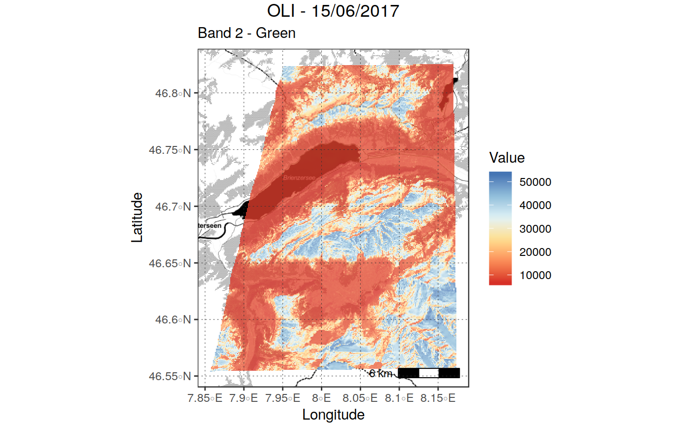
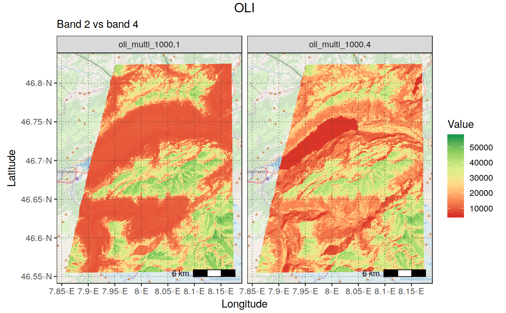
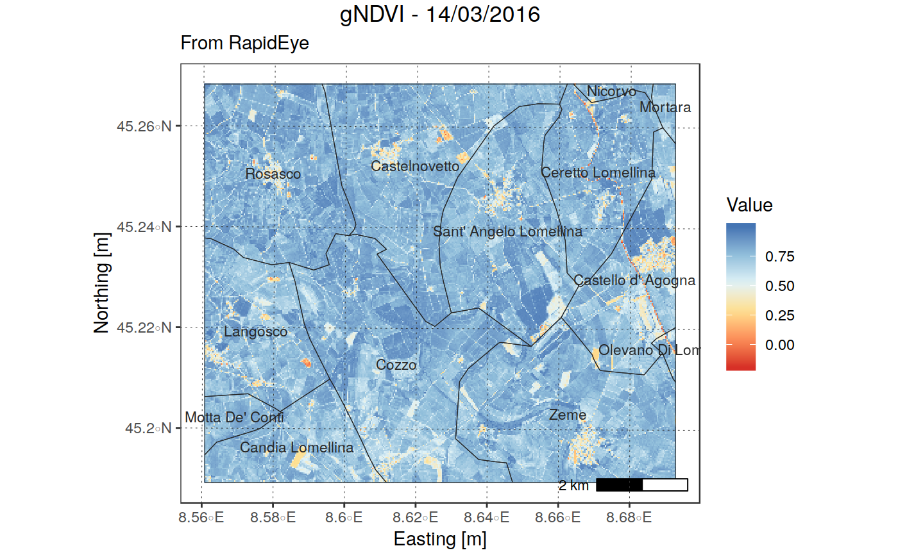
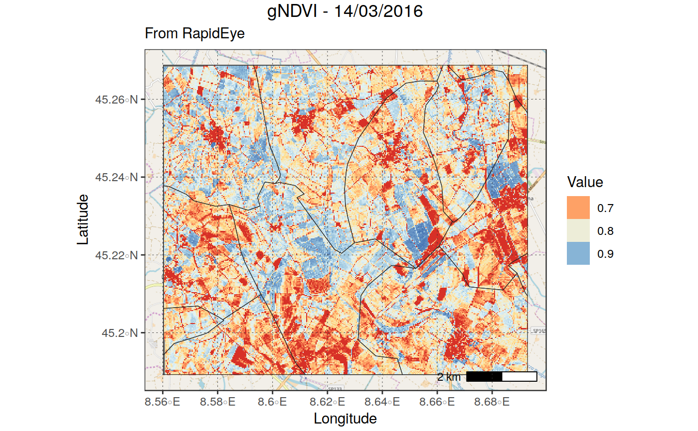

Plot a raster object using ggplot with an (optional) basemap.
The function allows to:
Plot a single- or multi-band image using facet_wrap (args bands_to_plot,
facet_rows)
Add an optional basemap to the plot, and adjust transparency of the
overlayed raster (args basemap, transparency)
"Easily" select different palettes (arg palette_name)
Easily control plotting limits on the z-dimension, specifying either
values or quantiles ranges (args zlims, zlims_type), as well as how
the outlier values are represented (args outliers_style and
outliers_color)
Easily control breaks and labels in legends (args leg_type, leg_breaks,
leg_labels)
Automatically add a scalebar to the plot (argsscalebar, scalebar_dist,
scalebar_txt_dist, scalebar_txt_size)
Easily add an additional "vector" layer (e.g., administrative boundaries)
(argsborders_layer, borders_color, borders_....)
See the description of the arguments for details on their use
plot_rast_gg(in_rast, rast_type = NULL, palette_name = NULL,
direction = 1, leg_type = NULL, leg_labels = NULL, leg_colors = NULL,
leg_breaks = NULL, leg_position = "right", maxpixels = 1e+05,
band_names = NULL, bands_to_plot = NULL, facet_rows = 2, xlims = NULL,
ylims = NULL, zlims = NULL, zlims_type = "vals",
outliers_style = "censor", outliers_colors = c("grey10", "grey90"),
basemap = NULL, zoomin = 0, borders_layer = NULL,
borders_color = "grey15", borders_size = 0.2, borders_txt_field = NULL,
borders_txt_size = 3, borders_txt_color = "grey15", scalebar = TRUE,
scalebar_dist = NULL, scalebar_txt_dist = 0.03, transparency = 0,
na.color = NULL, na.value = NULL, show_axis = TRUE, show_grid = TRUE,
grid_color = "grey20", title = NULL, subtitle = NULL,
theme = theme_bw(), verbose = TRUE)
Arguments
| in_rast |
Raster object to be plotted. Both mono- and multi-band
rasters are supported;
|
| rast_type |
character ("continuous" | "categorical"). Specifies if the
data in in_rast correspond to a continuous or categorical (i.e., low number
of integer levels - typically a classified raster) variable.
If NULL, the function tries to devise the correct type from the data,
Default: NULL
|
| palette_name |
character name of the palette to be used to "color" the raster.
If NULL, the following defaults are used as a function of variable type:
|
| direction |
character [0 | 1] direction of the color legend. Change this
to invert the color gradient, Default: 1
|
| leg_type |
character ["continuous", "discrete"] type of legend to be used
on continuous variables. If "continuous" , a colourbar is used. If "discrete",
a discretized version is used (see examples).#'
|
| leg_labels |
character (n_leg_breaks) labels to be used for the legend
If rast_type == "categorical", the number of labels must correspond to
the number of unique values of the raster to be plotted. If NULL or not valid,
the legend will use the unique raster values in the legend (see examples) If rast_type == "continuous" the number of labels must be
equal to the number of breaks specified by "leg_breaks". If this is not
TRUE, leg_breaks and leg_labels are reset to waiver() (TBD),
Default: NULL (the default ggplot2 labels = waiver() is used) |
| leg_colors |
characrter (n_leg_labels) Colors to be assigned to
the different values of fill_var if palette_name == "manual". The number
of colors must be equal to the number of unique values of fill_var, otherwise
an error will be issued. Colors can be specified as R color names (e.g.,
leg_colours = c("red", "blue"), HEX values (e.g., leg_colours = c(#8F2525, #41AB96), or a mix of the two. Note that the argument is mandatory if
palette_name == "manual", and ignored on all other palettes,
Default: NULL
|
| leg_breaks |
numeric (n_leg_labels) Values in the scale at which
leg_labels must be placed (if rast_type != "categorical"). The number
of breaks must be equal to the number of labels specified by "leg_labels".
If this is not TRUE, leg_breaks and leg_labels are reset to waiver()
(TBD) Default: NULL (the default ggplot2 labels = waiver() is used)
|
| leg_position |
character ["right" | "bottom"] Specifies if plotting
the legend on the right or on the bottom. Default: "right"
|
| maxpixels |
numeric maximum number of pixels to be used for plotting for
each band. Reduce this to speed-up plotting by subsampling the raster (this
reduces quality!). Increase it to improve quality (this reduces rendering
speed!), Default:1e5
|
| band_names |
character (nbands), array of band names. These will used
to populate the "strips" above each plotted band in case of multi-band plot.
If NULL, bnames are retrieved from the input raster using sprawl::get_rastinfo,
Default: NULL
|
| bands_to_plot |
numeric array, array of band numbers to be plotted in
case in_rast is multi-band. If NULL, all bands are plotted separately
using facet_wrap, Default: NULL
|
| facet_rows |
numeric, number of rows used for plotting multiple bands,
in faceted plots, Default: 2
|
| xlims |
numeric(2), minimum and maximum x coordinates to be plotted.
If NULL, the whole x-range is plotted, Default: NULL
|
| ylims |
numeric(2), minimum and maximum y coordinates to be plotted.
If NULL, the whole y-range is plotted, Default: NULL
|
| zlims |
numeric array [2] limits governing the range of
values to be plotted (e.g., c(0.2,0.4)), Default: NULL
|
| zlims_type |
character ["vals" | "percs"] type of zlims specified.
"vals": zlims indicates the range of values to be plotted "percs": zlims indicates the range of percentiles to be plotted (e.g.,
specifying zlims = c(0.02, 0.98), zlim_type = "percs" will plot the
values between the 2nd and 98th percentile). Ignored if zlims is not
set, Default: "vals" |
| outliers_style |
character ["censor" | "to_minmax"] specifies how
the values outside of the zlims range will be plotted.
If == "censor", they are plotted using the colors(s) specified in outliers_color If == "to_minmax", outliers are forced to the colors used for the maximum
and minimum values specified in zlims (using scales::squish), Default:
censor. |
| outliers_colors |
character array (length 1 or 2) specifies colors to be
used to plot values outside zlims if `outliers_style == "censor".
If only one color is passed, both values above max(zlims) and below min(zlims)
are plotted with the same color. If two colors are passed, the first color
is used to plot values < min(zlims) and the second to plot colors > max(zlims),
Default: c("grey10", "grey90")
|
| basemap |
character If not NULL and valid, the selected basemap is
used as background. For a list of valid basemaps, see rosm::osm.types(),
Default: NULL
|
| zoomin |
numeric, Adjustment factor for basemap zoom. Negative values
lead to less detailed basemap, but larger text. Default: 0
|
| borders_layer |
character object of class sf_POLYGON or sfc_polygon,
(or coercible to it using sprawl::cast_vect) to be overlayed to the plot,
Default: NULL (no overlay)
|
| borders_color |
color used to plot the boundaries of borders_layer
(if provided), Default: 'grey15' |
| borders_size |
size used to plot the boundaries lines of borders_layer
(if provided), Default: 0.2 |
| borders_txt_field |
name of the column of borders_layer to be used to
add text labels to borders_layer (if provided), Default: NULL (no labels) |
| borders_txt_size |
size of the txt labels derived from borders_layer,
Default: 2 |
| borders_txt_color |
color of the txt labels derived from borders_layer,
Default: "grey15" |
| scalebar |
logical If TRUE, add a scalebar on the bottom right corner,
Default: TRUE
|
| scalebar_dist |
numeric Width of the scale bar (in km). If NULL, it
is computed automatically on the basis of the range in x direction,
Default: NULL
|
| scalebar_txt_dist |
numeric Distance between scalebar and its labels.
Adjust this in case of overlap, Default: 0.30
|
| transparency |
numeric [0,1], transparency of the raster layer. Higher
values lead to higher transparency, Default: 0 (ignored if basemap == NULL)
|
| na.color |
character, color to be used to plot NA values,
Default: 'transparent'.
|
| na.value |
numeric, Additional values to be treated as NA, Default: NULL
|
| show_axis |
logical, If FALSE, axis names and labels are suppressed,
Default: TRUE
|
| show_grid |
logical, If FALSE, graticule lines are suppressed,
Default: TRUE
|
| grid_color |
character color to be used to plot grid lines,
Default: grey15"
|
| title |
character, Title of the plot, Default: "Raster Plot"
|
| subtitle |
Subtitle of the plot, Default: NULL |
| theme |
theme function ggplot theme to be used
(e.g., theme_light()), Default: theme_bw()
|
| verbose |
logical, If FALSE, suppress processing message,
Default: TRUE
|
Value
a gg plot. It is plotted immediately. If the call includes
an assignment operator (e.g., plot <- plot_rast_gg(in_rast)), the plot is
saved to the specified variable. Otherwise, it is plotted immediately.
Examples
#> plot_rast_gg --> Reprojecting the input raster to epsg:3857
#> reproj_rast --> Reprojecting `in_rast` to +init=epsg:3857 +proj=merc +a=6378137 +b=6378137 +lat_ts=0.0 +lon_0=0.0 +x_0=0.0 +y_0=0 +k=1.0 +units=m +nadgrids=@null +no_defs
#> Attemping to use geom_osm without coord_map()
#> Audotdetect projection: assuming Google Mercator (epsg 3857)

#Change basemap and transparency
plot_rast_gg(in_rast, basemap = "stamenbw",
palette_name = "RdYlBu",
show_axis = T,
na.value = 0, na.color = "transparent",
transparency = 0.2,
title = "OLI - 15/06/2017",
subtitle = "Band 2 - Green")
#> plot_rast_gg --> Reprojecting the input raster to epsg:3857
#> reproj_rast --> Reprojecting `in_rast` to +init=epsg:3857 +proj=merc +a=6378137 +b=6378137 +lat_ts=0.0 +lon_0=0.0 +x_0=0.0 +y_0=0 +k=1.0 +units=m +nadgrids=@null +no_defs
#> Attemping to use geom_osm without coord_map()
#> Audotdetect projection: assuming Google Mercator (epsg 3857)

#> plot_rast_gg --> Reprojecting the input raster to epsg:3857
#> reproj_rast --> Reprojecting `in_rast` to +init=epsg:3857 +proj=merc +a=6378137 +b=6378137 +lat_ts=0.0 +lon_0=0.0 +x_0=0.0 +y_0=0 +k=1.0 +units=m +nadgrids=@null +no_defs
#> Attemping to use geom_osm without coord_map()
#> Audotdetect projection: assuming Google Mercator (epsg 3857)
#> Attemping to use geom_osm without coord_map()
#> Audotdetect projection: assuming Google Mercator (epsg 3857)

#> get_boundaries --> Downloading data for: "ITA", Level: 3
#> make_folder --> Creating /tmp/RtmprpzVW8 folder
#> make_folder --> specified `path` already exists!
plot_rast_gg(in_rast,
palette_name = "RdYlBu",
title = "gNDVI - 14/03/2016", subtitle = "From RapidEye",
borders_layer = borders, borders_txt_field = "NAME_3")
#> crop_vect --> cropping . on extent of in_rast
# limits adjusted on the 10th and 99.9th percentile to remove very low
# values outliers and better use the palette on high values (note that
# outliers can be set as transparent!) + increase maxpixels to plot at
# full resolution.
plot_rast_gg(in_rast, basemap = "osm", maxpixels = 500e5,
palette_name = "RdYlBu",
zlims = c(0.10, 0.999), zlims_type = "percs",
title = "gNDVI - 14/03/2016", subtitle = "From RapidEye",
outliers_style = "censor",
outliers_colors = c("transparent", "purple"))
#> plot_rast_gg --> Reprojecting the input raster to epsg:3857
#> reproj_rast --> Reprojecting `in_rast` to +init=epsg:3857 +proj=merc +a=6378137 +b=6378137 +lat_ts=0.0 +lon_0=0.0 +x_0=0.0 +y_0=0 +k=1.0 +units=m +nadgrids=@null +no_defs
#> Attemping to use geom_osm without coord_map()
#> Audotdetect projection: assuming Google Mercator (epsg 3857)

# Adjust `maxpixels` to speed-up rendering by sacrificing quality
plot_rast_gg(in_rast, basemap = "osm", maxpixels = 10e4,
palette_name = "RdYlBu",
zlims = c(0.10, 0.999), zlims_type = "percs",
title = "gNDVI - 14/03/2016", subtitle = "From RapidEye",
outliers_style = "to_minmax",
leg_type = "discrete")
#> plot_rast_gg --> Reprojecting the input raster to epsg:3857
#> reproj_rast --> Reprojecting `in_rast` to +init=epsg:3857 +proj=merc +a=6378137 +b=6378137 +lat_ts=0.0 +lon_0=0.0 +x_0=0.0 +y_0=0 +k=1.0 +units=m +nadgrids=@null +no_defs
#> Attemping to use geom_osm without coord_map()
#> Audotdetect projection: assuming Google Mercator (epsg 3857)